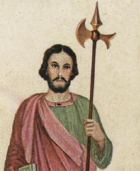
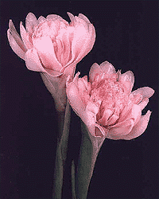
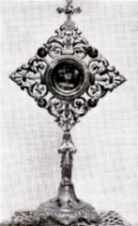
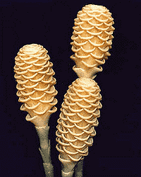
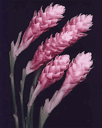

Há diversas versões sobre o
martírio de São Judas Tadeu. Entretanto, todos 
Alguns escritores afirmam que São Judas e São Simão foram arrastados prisioneiros até o Templo do Sol. Assim que chegaram os maus espíritos ficaram nervosos e questionaram apavorados: “Que tendes conosco, Apóstolos do SENHOR? Desde que entraram aqui estamos horrivelmente atormentadosâ€.
Então, um Anjo apareceu aos Apóstolos e lhes disse: “Apóstolos de CRISTO, escolhei uma destas duas coisas: que sejam mortos todos os seus inimigos para que continuem vivos e livres para a pregação do Evangelho, ou que sejam martirizados e recebam uma grande glória no Céu?â€
Os dois Apóstolos responderam ao Anjo que preferiam o martírio por CRISTO.

Naquele mesmo momento, dois ferozes demônios com aspecto hediondo saíram das imagens e puseram-se a quebrar todos os ídolos do Templo.
O povo que frequentava, fanáticos e idólatras, ficaram indignados ao verem por terra as imagens de seus deuses. Precipitaram-se furiosamente contra os Apóstolos e os trucidaram barbaramente a golpes de machados.
Outros escritores afirmam que os dois Apóstolos embora avisados por um Anjo do SENHOR, não fugiram do martírio, foram vítimas de uma emboscada noturna, por um grupo de malfeitores enviados pelos Feiticeiros, tendo sido martirizados num lugar ermo, morrendo a golpes de machados, lanças e cassetetes.
Quanto ao local do martírio, também existe controvérsia. Alguns afirmam que foi em Berito ou Nerito, outros dizem que foi em Arate ou Aráduas, e ainda mencionam Sufian ou Siani, todas elas, pequenas cidades persas próximas uma das outras.
São Judas morreu no dia 28 de
Outubro, ano 70, primeiro século do 
Séculos posteriores a Paróquia foi suprimida e o Papa Leão XIII (1878/1903), mandou que os restos mortais dos dois Apóstolos fossem colocados na Igreja de São Pedro, num altar dedicado a ambos, onde se encontram até hoje na Basílica do Vaticano.
Entretanto, é importante realçar que existem relíquias de São Judas Tadeu em quase todos os países católicos. Significa dizer, que as duas urnas mortuárias que se encontram sob o Altar dos dois Apóstolos, no Vaticano, conservam apenas alguns ossos dele e de São Simão.
Aqui no Brasil, existem Igrejas e Santuários dedicados ao Apóstolo, em quase todos os Estados da Federação. Os mais importantes são: o Santuário de São Judas Tadeu em São Paulo, Capital, avenida Jabaquara, 2.682, bairro Jabaquara, Santuário no Rio de Janeiro, rua Cosme Velho, 470, bairro Cosme Velho, e o Santuário em Belo Horizonte, rua Macaé, 671, bairro da Graça.
A imagem do Santo apresenta um homem de meia-idade, segurando com a mão direita um livro ou um rolo de papel, que representa a Palavra Divina que ele pregou ou a Epístola que escreveu, e segurando com a mão esquerda um machado persa estilizado ou alabarda, que foi o instrumento de sua morte.

"São Judas Tadeu, glorioso Apóstolo, fiel servo e amigo de JESUS, o nome do traidor foi causa de que fosseis esquecido por muitos, mas a Igreja vos honra e invoca universalmente, como protetor dos aflitos.
Rogai a DEUS por mim. Fazei uso do vosso poder e trazei imediato auxílio ás minhas necessidades, para que possa receber as consolações do Céu em todas as minhas precisões, atribulações e sofrimentos, alcançando-me a graça de ................ (aqui faz o pedido ), a fim de que eu possa louvar a DEUS convosco e com todos os eleitos por toda eternidade, depois de ter levado, a vosso exemplo, uma vida verdadeiramente cristã aqui na Terra.
Eu vos prometo lembrar-me sempre de vossos favores e de fazer tudo o que estiver ao meu alcance para que sejais honrado, conhecido e imitado por todos os meus irmãos em CRISTO.
São Judas Tadeu, rogai por nós e por toda a Santa Igreja."
(Rezar 3 Pai Nosso + 3 Ave Maria + 3 Glória) - Esta Oração pode ser utilizada como Novena, rezando-a durante nove dias seguidos.
FIM
